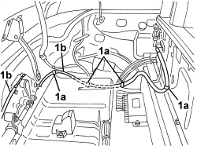
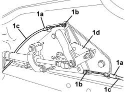
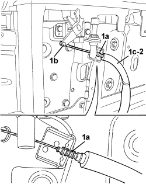
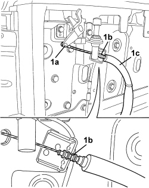

7025D22 HOOD HOUSING COMPARTMENT COVER OPENING CONTROL, LEFT AND RIGHT - R.R.
- Path
- Procedures > 70 FITTINGS > 7025 COMPARTMENT COVERS > 7025D HOOD HOUSING COMPARTMENT COVER > 7025D22 HOOD HOUSING COMPARTMENT COVER OPENING CONTROL, LEFT AND RIGHT - R.R.
- Kind
- repair procedure (removal / refitting; the operation number is the code)
- Applies to
- engines: 2.2 JTS, 3.2 JTS; all production periods
- Interactive page
- https://sloeber94.github.io/elrnDB-aBrrSpdr/en/#/946004083
Applies to: engines: 2.2 JTS, 3.2 JTS; all production periods
 Removing
Removing
 Refitting
Refitting- Prepare the hood for the operation.
Op. 0010T79 HOOD HYDRAULIC SYSTEM - DISCHARGE AND RESTORE PRESSURE
Op. 7040C11 HOOD HOUSING COMPARTMENT FLOOR TRIM - R.R.
Op. 7040C13 HOOD HOUSING COMPARTMENT REAR TRIM - R.R.
Op. 7040C14 HOOD HOUSING COMPARTMENT SIDE TRIM (ONE), LEFT OR RIGHT - R.R.
1. Disconnect the retaining bands (1a) for the cover opening control (1b) involved.

Applies to: engines: 2.2 JTS, 3.2 JTS; all production periods
1. Working at the rear of the hood housing, disconnect terminal (1a) and then terminal (1b) of the opening control (1c) involved, from the operating mechanism (1d).

Applies to: engines: 2.2 JTS, 3.2 JTS; all production periods
1. Working at the front of the hood housing, disconnect terminal (1a) and then terminal (1b) of the opening control (1c) involved, from the lock.
2. Remove the opening control.

Applies to: engines: 2.2 JTS, 3.2 JTS; all production periods
Refitting
Removing- Check that the opening control is not damaged.
- Position the opening control.
1. Working at the front of the hood housing, connect terminal (1a) and then terminal (1b) of the opening control (1c) involved, to the lock.

Applies to: engines: 2.2 JTS, 3.2 JTS; all production periods
- Working at the rear of the hood housing, connect the terminals of the opening control involved to the operating mechanism.
- Connect the retaining bands for the opening control involved.
Op. 7040C14 HOOD HOUSING COMPARTMENT SIDE TRIM (ONE), LEFT OR RIGHT - R.R.
Op. 7040C13 HOOD HOUSING COMPARTMENT REAR TRIM - R.R.
Op. 7040C11 HOOD HOUSING COMPARTMENT FLOOR TRIM - R.R.
- If discharged, restore the hood hydraulic system pressure.
Op. 7030H03 HOOD MANUAL OPENING FOLLOWING DEACTIVATION OF HYDRAULIC SYSTEM - CARRY OUT PROCEDURE
- Check that the hood is working correctly.
Topics linked from this page (5)
- 0010T79 HOOD HYDRAULIC SYSTEM - DISCHARGE AND RESTORE PRESSURE
- 7030H03 HOOD MANUAL OPENING FOLLOWING DEACTIVATION OF HYDRAULIC SYSTEM - CARRY OUT PROCEDURE
- 7040C11 HOOD HOUSING COMPARTMENT FLOOR TRIM - R.R.
- 7040C13 HOOD HOUSING COMPARTMENT REAR TRIM - R.R.
- 7040C14 HOOD HOUSING COMPARTMENT SIDE TRIM (ONE), LEFT OR RIGHT - R.R.